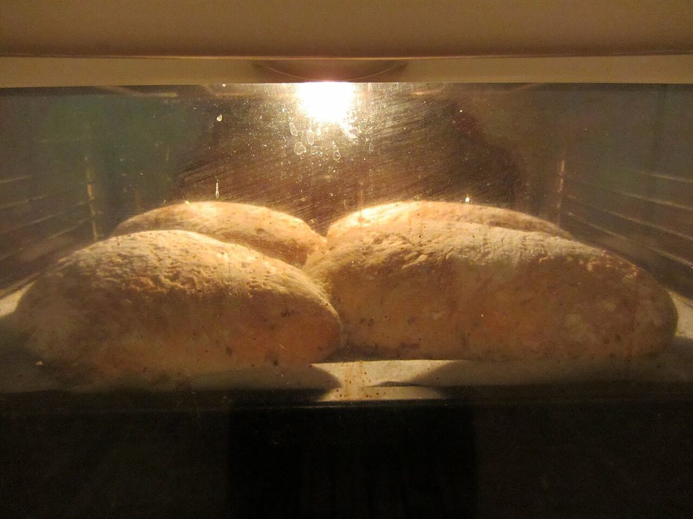

鴎倶楽部
会員証 ふうの案内札
鴎倶楽部かもめくらぶ
山梨県富士吉田市のパン屋「鴎倶楽部」のご案内ページです。営業時間やメニューなど詳しいことは準備中。まずはお電話かInstagramをどうぞ。

制作側の連想
「倶楽部」から、会則の掲示板を思いついた
店名の由来は分かりません。制作側は「倶楽部」という言葉から、部室や集会所の壁に貼られた会則を連想しました。「鴎」は海鳥のカモメを表す字ですが、お店との関係は分かりません。そこでこのサイトは、緑のフェルトの掲示板に「全五条」の紙札を留めていく作りにしています。制作側の連想で、お店の理念・由来とは無関係です。
写真(イメージ)
掲示板に留めた、パンの写真
国外・撮影地不明のフリー素材で、お店のものではなく、提供内容を示すものでもありません。




第四条の抜き書き
お店のこと(確認できたものだけ)
| 所在地 | 〒403-0004 山梨県富士吉田市下吉田7丁目33-3 |
|---|---|
| 電話 | 0555-22-3900 |
| 営業時間 | 準備中 |
| 定休日 | 準備中 |
| ご予約 | 準備中 |
| 駐車場 | 準備中 |
| SNS | Instagram @kamome3900 |